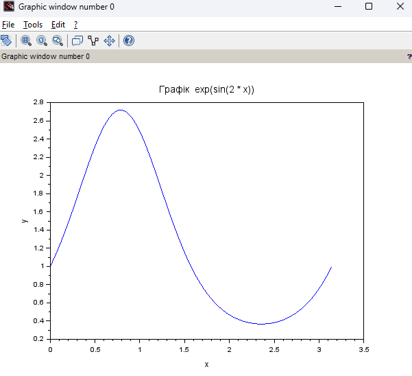
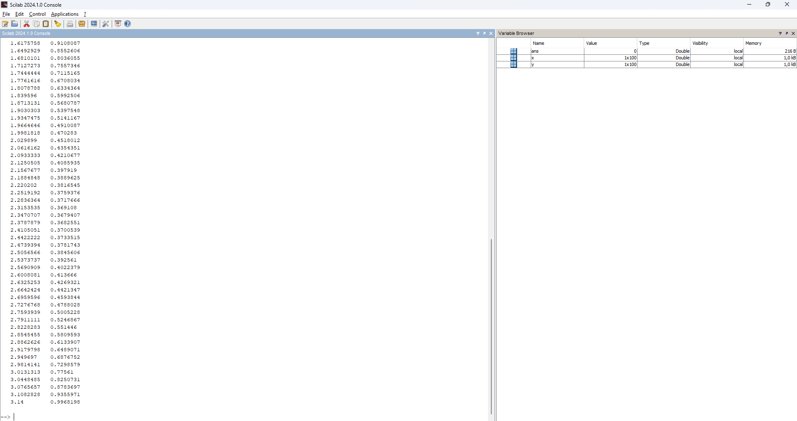
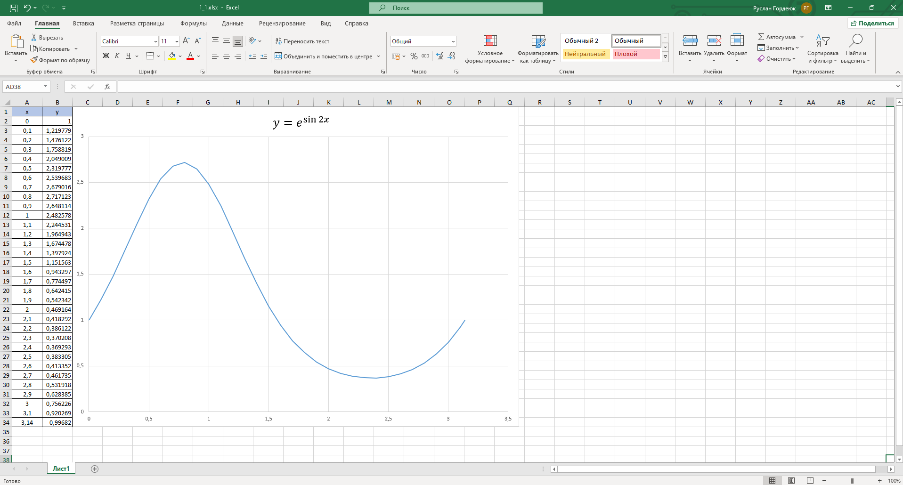

Завдання 1.1
Побудувати за допомогою Scilab графік функції згідно з варіантом на довільному
відрізку. Знайти значення функції у довільних точках, протабулювати цієї функції на відрізку [0;π],
змінення значення змінної виконувати з довільним кроком.
Виконати перевірку отриманого результату шляхом побудови того самого графіка у MS Excel.
Результати порівняти.
Варіант 7
Функція:
\[y = e^{sin{2x}}\]
Код написаний на Scilab
1_1.sce
x = linspace(0, 3.14, 100);
y = exp(sin(2 * x))
plot(x, y);
xlabel('x');
ylabel('y');
title('Графік exp(sin(2 * x))');
disp([x', y']);
Результат роботи програми:
Рисунок 1 - Графік функції
Рисунок 2 - Табулювання функції
Результат роботи Excel:
Рисунок 3 - Excel таблиця
Висновок
При порівнянні результатів з Scilab та Excel, можна сказати що графіки співпадають один з одним.